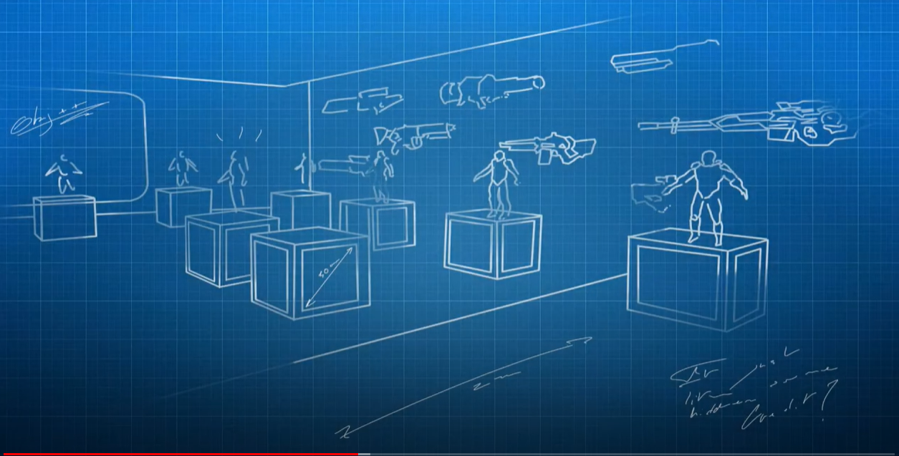
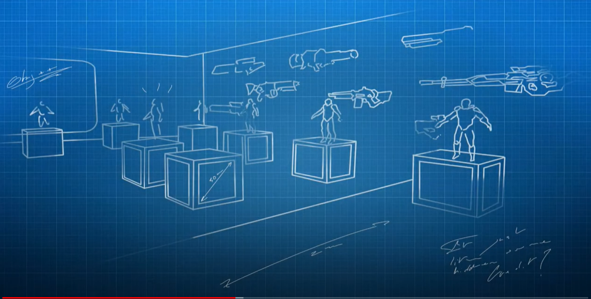

Magic Di Rosa is a semester-long board game creation project at ETPA. The goal of the project is to recreate an existing board game by combining a film and an artist. In this case, I worked with Hervé Di Rosa, a Sete-based artist, and Porco Rosso, one of Miyazaki’s films. All the graphics and illustrations were entirely designed by me and refined by a graphic design student.
GDD is available here: ici


Ataraxy is a game from the 2021 Global Game Jam, theme: "Lost and Found". The goal is to collect artifacts representing emotions to achieve ataraxia. The game has two phases: navigating the soul through a maze and probing a 3D area to locate invisible artifacts.
Visuals and playable version.
Lardon’s Adventure is a web-based platformer using Phaser 3. The player can enter a second phase where time stops to program abilities.
Game Concept & GDD. Playable version on Itch.io

REC is a game prototype from first-year classmates. Goal: fully playable in 1.5 months. Programming, level design, sound by us; 3D assets/clones from a library.
Puzzle FPS: the player is a test subject, actions are cloned to solve puzzles.

 

Mutegg is a game from an inter-campus Game Jam. Theme: "Communicate Without Speaking." Split-screen, two-player game.
I programmed; teammates handled design, art, narrative. The player is a manager influencing employees with gestures.